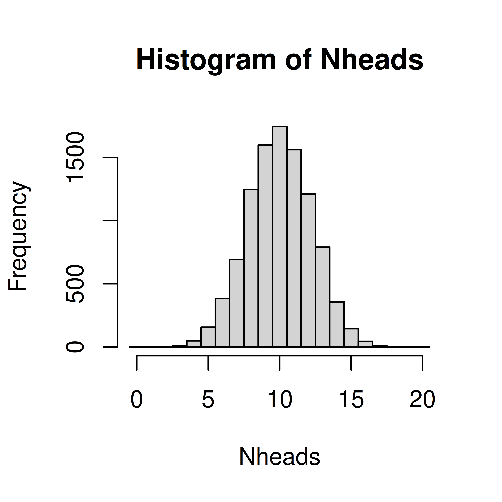

Exercises: Discrete random variables
Introduction to probability
Exercise 2.1 The probability of carrying mutations (one or more) in the breast cancer gene BRCA1 is 0.01. What is the probability of not carrying any mutations in BRCA1?
Exercise 2.2 When tossing a fair coin a) what is the probability of heads? b) what is the probability of tails?
Exercise 2.3 In a region in Sweden with many children the number of children per household is between 0 and 6. The probability mass function is as follows;
| x | 0 | 1 | 2 | 3 | 4 | 5 | 6 |
| p(x) | 0.14 | 0.20 | 0.27 | 0.19 | 0.13 | 0.05 | 0.02 |
In a randomly choosen household
- what is the probability of exactly 3 children?
- what is the probability of less than 3 children?
- what is the probability of 3 or less children?
- what is the probability of an even number of children?
In your answers, denote the probability with a matematical expression (such as \(P(X>4)\)) and calculate its value.
Exercise 2.4 When tossing a fair six-sided die
- what is the probability of getting 6?
- what is the probability of an even number?
- what is the probability of getting 3 or more?
- what is the expected value of dots on the die?
Simulation
Exercise 2.5 In a single coin toss the probability of heads is 0.5.
In 20 coin tosses,
- what is the probability of exactly 15 heads?
- what is the probability of less than 7 heads?
- What is the most probable number of heads?
- what is the probability of 5 tails or less?
- what is the probability of 2 heads or less?
Exercise 2.6 In a clinical trial enrolled patients are randomly assigned to treatment or control group with equal probability.
For a sinle patient, what is the probability of being assigned to a) the treatment group? b) the control group?
If 20 patients are enrolled in the study;
- what is the probability of exactly 15 in the patient group?
- what is the probability of less than 7 in the patient group?
- What is the most probable number of patients in the treatment group?
- what is the probability of 5 or less patients in the control group?
- what is the probability of 2 or less patients in the treatment group?
Exercise 2.7 When rolling 10 six-sided dice, study the number of sixes.
- Define the random variable of interest
- What are the possible outcomes?
- Using simulation, estimate the probability mass function
- what is the probability to get at least 5 sixes?
- Which is the most likely number of sixes?
- What is the probability to get exactly 2 sixes?
- On average how many sixes do you get when throwing ten dice?
Exercise 2.8 In a bacterial sample, 1/6 are antibiotic resistant. From bacterial colonies on an agar plate, you randomly pick 10 colonies and investigate how many that are antibiotic resistant.
- Define the random variable of interest
- What are the possible outcomes?
- Using simulation, estimate the probability mass function
- what is the probability to get at least 5 antibiotic resistant colonies?
- Which is the most likely number of antibioitic colonies?
- What is the probability to get exactly 2 antibiotic resistant colonies?
- On average how many antibiotic resistant colonies would you get if the experiment is repeated many time?
Exercise 2.9 A deck of cards consists of 52 cards; 13 diamonds, 13 spades, 13 hearts and 13 clubs. When five cards are randomly selected (a poker hand), what is the probability of getting all hearts?
Exercise 2.10 30% of a large population is allergic to pollen. If you randomly select 3 people to participate in your study, what is the probability than none of them will be allergic to pollen?
Exercise 2.11 In a class of 20 students, 6 are allergic to pollen. If you randomly select 3 of the students to participate in your study, what is the probability than none of them will be allergic to pollen?
Exercise 2.12 Of the 200 persons working at a company, 60 are allergic to pollen. If you randomly select 3 people to participate in your study, what is the probability that none of them are allergic to pollen?
Parametric discrete distributions
Exercise 2.14 Do exercises 2.10, 2.11 and 2.12 again, but using parametric distributions. Compare your results.
Exercise 2.15 Gene set enrichment analysis
You have analyzed 20000 genes and a bioinformatician you are collaborating with has sent you a list of 1000 genes that she says are important. You are interested in a particular pathway A. 200 genes in pathway A are represented among the 20000 genes, 20 of these are in the bioinformaticians important list.
If the bioinformatician selected the 1000 genes at random, what is the probability to see 20 or more genes from pathway A in this list?
Exercise 2.16 Chance of meeting boss
Your boss comes in to the office three days per week. You do also come in to work three days per week. If you both choose which days to come in to work at random, what is the probability that a particular week you are in the office at the same time 0, 1, 2 or 3 days, respecively?
## x
## 1 2 3
## 29787 60156 10057## [1] 0.0 0.3 0.9 1.0Conditional probability
Exercise 2.17 Diagnostic tests
| pos | neg | tot | |
|---|---|---|---|
| not cancer | 98 | 882 | 980 |
| cancer | 16 | 4 | 20 |
| total | 114 | 886 | 1000 |
the probability of a positive test result from a person with cancer?
the probability of a negative test result from a person without cancer?
the probability of having cancer, if the test is positive?
the probability of not having cancer, if the test is negative?
Connect the four computed probabilities with the following four terms;
- Sensitivity
- Specificity
- Positive predictive value (PPV)
- Negative predictive value (NPV)
Solutions: Discrete random variables
According to the rule of complement \(P(no\,mutation) = 1 - P(mutations) = 1 - 0.01 = 0.99\)
- 0.5
- 0.5
``{exercise, children, echo=TRUE} In a region in Sweden with many children the number of children per household is between 0 and 6. The probability mass function is as follows;
\@ref(exr:pmfchildren)
kable(matrix(c(as.character(0:6),c("0.14","0.20","0.27","0.19","0.13","0.05","0.02")),ncol=7, byrow=TRUE, dimnames=list(c('x','p(x)'), c()))) %>% kable_styling(full_width = FALSE)- \(P(X=3) = 0.19\)
- \(P(X<3) = P(X=0) + P(X=1) + P(X=2) = 0.14 + 0.20 + 0.27 = 0.61\)
- \(P(X \leq 3) = P(X=3) + P(X<3) = 0.19 + 0.61 = 0.80\)
- \(P(even\,X) = P(X=0) + P(X=2) + P(X=4) + P(X=6) = 0.14 + 0.27 + 0.13 + 0.02 = 0.56\)
- \(\frac{1}{6}\)
- \(\frac{3}{6} = \frac{1}{2}\)
- \(\frac{4}{6} = \frac{2}{3}\)
- \(1*\frac{1}{6} + 2*\frac{1}{6} + 3*\frac{1}{6} + 4*\frac{1}{6} + 5*\frac{1}{6} + 6*\frac{1}{6} = 3.5\)
Simulate as in the lecture;
## A single coin toss
sample(c("H", "T"), size=1)## [1] "H"## Another coin toss
sample(c("H", "T"), size=1)## [1] "H"## 20 independent coin tosses
(coins <- sample(c("H", "T"), size=20, replace=TRUE))## [1] "H" "H" "H" "T" "H" "T" "T" "T" "H" "T" "H" "T" "T" "T" "H" "H" "T" "T" "H" "T"## How many heads did we get in these particular 20 draws?
sum(coins == "H")## [1] 9## The simulation is about repeating this (20 random draws and summing up the number of heads) many times. To do it 10000 times;
Nheads <- replicate(10000, {
coins <- sample(c("H", "T"), size=20, replace=TRUE)
sum(coins == "H")
})- Probability of exactly 15 heads
## Numer of times of the 10000 with exactly 15 heads
sum(Nheads==15)## [1] 140## divide by 10000 to get the probability
sum(Nheads==15)/10000## [1] 0.014## or compute using mean (why does this work?)
mean(Nheads==15)## [1] 0.014- Probability of less than 7 heads
mean(Nheads<7)## [1] 0.057- What is the most probable number of heads?
## plot the distribution and read the graph
hist(Nheads, breaks=0:20-0.5)
## or tabulate
table(Nheads)## Nheads
## 2 3 4 5 6 7 8 9 10 11 12 13 14 15 16 17
## 1 9 52 152 357 667 1204 1610 1773 1609 1236 760 373 140 42 11
## 18
## 4- What is the probability of 5 tails or less?
To get five or less tails out of 20 throws is equal to getting 15 or more heads out of 20.
## probability of 15 heads or more
mean(Nheads>=15)## [1] 0.02- what is the probability of 2 heads or less?
mean(Nheads<=2)## [1] 1e-04sum(Nheads<=2)## [1] 1## with this low number of observations, more repeats is required to get a more accurate answer
Nheads <- replicate(1000000, {
coins <- sample(c("H", "T"), size=20, replace=TRUE)
sum(coins == "H")
})
sum(Nheads<=2)## [1] 203mean(Nheads<=2)## [1] 2e-04- 0.015
- 0.058
- 10
- 0.020
- 0.0002
- \(X\), the number of sixes when rolling 10 dice.
- \({0, 1, 2, 3, 4, 5, 6, 7, 8, 9, 10}\)
N <- replicate(100000, sum(sample(1:6, size=10, replace=TRUE)==6))
table(N)## N
## 0 1 2 3 4 5 6 7 8
## 16273 32529 28641 15501 5413 1396 215 28 4hist(N, breaks=(0:11)-0.5)- What is the probability to get exactly 2 sixes?
- On average how many sixes do you get when throwing ten dice?
- 0.015
## [1] 1643## [1] 0.016## [1] 0.016- 1
- 0.29
mean(N==2)## [1] 0.29- 1.7
mean(N)## [1] 1.710*1/6## [1] 1.70.00049
N <- replicate(100000, sum(sample(rep(0:1, c(39,13)), size=5)))
hist(N, breaks=(0:6)-.5)
## P(N==5)
mean(N==5)## [1] 0.00055## Solution using 100 replicates
x <- replicate(100, sum(sample(c(0,0,0,0,0,0,0,1,1,1), size=3, replace=TRUE)))
table(x)## x
## 0 1 2 3
## 42 41 15 2mean(x==0)## [1] 0.42## Solution using 1000 replicates
x <- replicate(1000, sum(sample(c(0,0,0,0,0,0,0,1,1,1), size=3, replace=TRUE)))
table(x)## x
## 0 1 2 3
## 314 457 197 32mean(x==0)## [1] 0.31## Solution using 100000 replicates
x <- replicate(100000, sum(sample(c(0,0,0,0,0,0,0,1,1,1), size=3, replace=TRUE)))
table(x)## x
## 0 1 2 3
## 34219 44166 18915 2700mean(x==0)## [1] 0.34## Solution using 100000 replicates
x <- replicate(100000, sum(sample(rep(c(0, 1), c(14, 6)), size=3, replace=FALSE)))
table(x)## x
## 0 1 2 3
## 32033 47907 18291 1769mean(x==0)## [1] 0.32## Solution using 100000 replicates
x <- replicate(100000, sum(sample(rep(c(0, 1), c(140, 60)), size=3, replace=FALSE)))
table(x)## x
## 0 1 2 3
## 34218 44373 18853 2556mean(x==0)## [1] 0.34Parametric discrete distributions
## 1.6 Solution using the Binomial distribution
pbinom(0, 3, 0.3)## [1] 0.34## 1.7 Solution using the hypergeometric distribution
phyper(0, 6, 20-6, 3)## [1] 0.32## 1.8 Solution using the hypergeometric distribution
phyper(0, 66, 200-60, 3)## [1] 0.31phyper(20, 200, 20000-200, 1000, lower.tail=FALSE)## [1] 0.0011